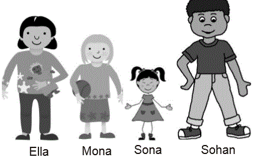
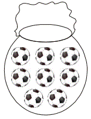
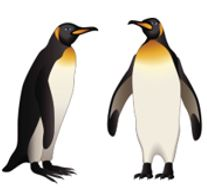
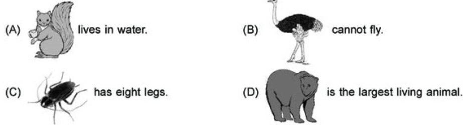
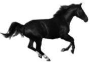
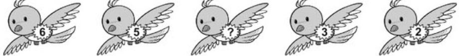

<!DOCTYPE html>
<html>
<head>
	<meta charset="UTF-8">
	<link href="../css/style.css" rel="stylesheet" />
</head>
 <body>
<script type="text/javascript" src="../../practise_code.js"></script>
<script>

//Animals

var questions = [
["Kids love to play with which of the following animals?","Dog","Rabbit","Giraffe","Both (a) and (b)","D"],
["I am green colored bird. I eat green chilly. Who am I?","Parrot","Sparrow","Crow ","Pigeon","A"],
["Which of the following animal lives in the forest? "," Giraffe","Tiger","Zebra ","All of these ","D"],
["Which of the following is the correct order from the tallest to the shortest? <BR>","Sohan, Ella, Mona, Sona","Sona, Sohan, Ella, Mona","Ella, Mona, Sona, Sohan ","Mona, Sona, Sohan, Ella","A"],
["Given pot has 1 red ball and rest blue balls. How many are blue color balls? <BR>","7","6","5","4","A"],
["The picture shows penguins. They have fat layer to adapt to the conditions in which they live.<BR> How does it help them ? <BR>","to swim better","to fly better","keeps them warm","to see better","C"],
["Select the correct option- <BR>","A","B","C","D","D"],
["Unscramble the words given below to get the name of the home of the animal shown in the figure.<BR> <BR> 'ATSLBE'","Ebstla","Tebsla","Stable","Belsta","C"],
["Choose the CORRECT option to replace the “?” in the given figure series. <BR>","1","3","4","5","C"],
["Which among these animal lives on water and eats other animal? ","Cow","Crow","Shark","All of above","C"],

]

</script>
<table><tr>
  <td class="timer-pic"></td><td class="timer-text"><p id="demo" ></p></td> 
</tr>
</table>
<h2 id="test_status"></h2>
<div id="test"></div>
</body>
</html>